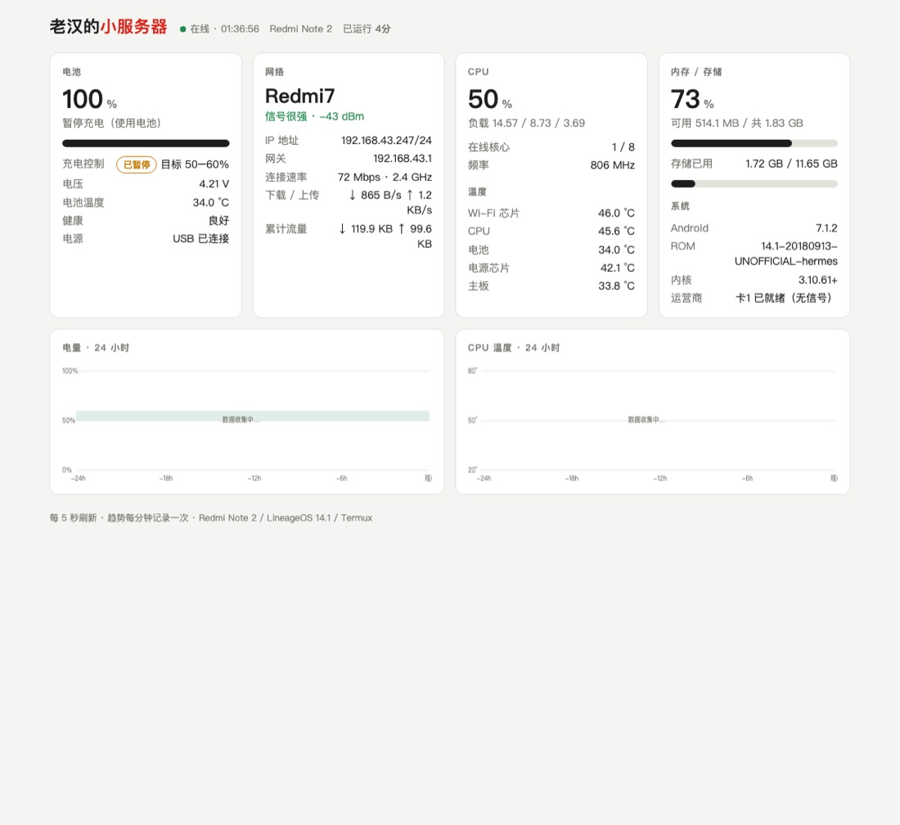
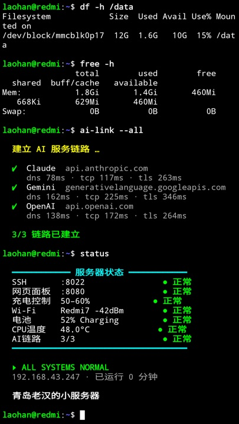
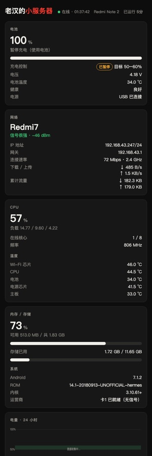

把旧手机变成小服务器：刷机与搭建全记录
Redmi Note 2（hermes / MT6795）· MIUI 9 → LineageOS 14.1 → Termux 服务器 · 2026-10-17
0概览
目标：一台常年插电、能上网、屏幕正常显示的局域网小服务器。最终效果：
| 功能 | 说明 |
|---|---|
| 系统 | LineageOS 14.1（Android 7.1.2），TWRP 3.7.0 恢复模式 |
| 远程登录 | ssh -p 8022 192.168.43.247（Termux，密钥登录） |
| 状态网页 | http://192.168.43.247:8080：电池、Wi-Fi、CPU、温度、内存、24 小时趋势 |
| 电池保护 | 电量保持在 40%–70%，避免老电池常年满电鼓包 |
| 开机界面 | 自定义第一屏、带进度条和背景音乐的开机动画、开机后 Termux 自动演示 |
| 自愈 | SSH 和网页服务由系统 init 守护，挂了 30 秒内自动拉起，开机自动启动 |



整体流程
设备信息
| 项目 | 值 |
|---|---|
| 型号 / 代号 | Redmi Note 2 / hermes |
| 芯片 | MediaTek MT6795M，8 核 arm64（平时只开 1–3 核） |
| 内存 / 存储 | 2 GB / 16 GB |
| 屏幕 | 1080 × 1920 |
| 原系统 | MIUI 9.6.1.0（Android 5.0.2） |
| 网络 | Wi-Fi 热点 "Redmi7"，IP 192.168.43.247（DHCP 分配） |
文中标记
每段命令前的标签说明它在哪里执行：
MAC 在 Mac 终端执行；
ADB 通过 adb shell 在手机系统里执行；
TWRP 手机处于 TWRP 恢复模式时，通过 adb 执行；
TERMUX 在手机 Termux 里（或 SSH 登录后）执行。
1准备工作
1.1 Mac 端工具
MACwhich adb fastboot # 确认 Android 调试工具已安装
adb devices -l # 列出已连接、已授权的手机adb：Android 调试桥，用来在手机上执行命令、传文件、重启到不同模式。fastboot：bootloader 模式下刷写分区的工具。两者都来自 Android SDK Platform-Tools。-l：显示详细信息（型号、代号），用来确认连的是哪台设备。
另外用到：ffmpeg（图片 / 音频转换）、yt-dlp（下载音乐）、python3。
1.2 手机端设置
- 设置 → 关于手机 → 连续点"MIUI 版本"7 次，打开开发者模式。
- 设置 → 其他设置 → 开发者选项 → 打开 USB 调试。
- 用数据线连接 Mac，手机弹出"允许 USB 调试吗？"时勾选"始终允许"。
1.3 USB 连不上怎么排查
MACioreg -p IOUSB -l -w0 | grep -E '"USB Product Name"|"idVendor"'- 列出 Mac 识别到的所有 USB 设备。小米手机的厂商号
idVendor是10007（0x2717），联发科是3725（0x0e8d）。 - 如果这里都看不到手机，问题在物理层（线或接口），跟 adb 无关。
AB13X USB Audio），手机信号根本没过来。最后换成一根能传数据的直连线才识别出来。2读取手机信息、确认 bootloader
ADBadb shell getprop ro.product.device # 设备代号，必须是 hermes
adb shell getprop ro.build.version.release # Android 版本：5.0.2
adb shell getprop ro.build.version.incremental # MIUI 版本：V9.6.1.0.LHMCNFD
adb shell getprop ro.board.platform # 芯片平台：mt6795
adb shell dumpsys battery # 电量、电池健康getprop：读取 Android 系统属性。代号最重要：刷机包只能用对应代号（hermes）的，Redmi 2（wt88047）的包不能混用。dumpsys battery：刷机前确认电量充足（建议 > 50%），刷到一半没电容易出事。
adb reboot bootloader # 重启进 fastboot（屏幕出现兔子）
fastboot getvar all # 读取 bootloader 状态- 输出里
unlocked: yes、secure: no表示 bootloader 已经解锁，可以直接刷，不用走小米官方解锁流程。 - 手动进 fastboot：关机后同时按住 音量下 + 电源。
fastboot boot twrp.img（临时启动、不写入），返回 unknown command。所以 TWRP 只能直接刷进 recovery 分区。3下载刷机文件
| 文件 | 来源 | 说明 |
|---|---|---|
twrp-3.7.0_9-0-hermes.img | TWRP 官方 dl.twrp.me/hermes | 官方支持 hermes，主用 |
twrp-3.1.1-universal502.img | hermes-mirrors（GitHub Releases） | 备用，支持 Android 5 分区结构 |
lineage-14.1-20180913-UNOFFICIAL-hermes.zip | hermes-mirrors（GitHub Releases） | 451 MB，Android 7.1.2，非官方版 |
D=/Volumes/SSD1G/download/redmi-note2-flash; mkdir -p $D; cd $D
# TWRP 官方下载要带 Referer（下载页地址），否则拿到的是网页而不是镜像
curl -fL -e "https://dl.twrp.me/hermes/twrp-3.7.0_9-0-hermes.img.html" \
-o twrp-3.7.0_9-0-hermes.img https://dl.twrp.me/hermes/twrp-3.7.0_9-0-hermes.img
curl -fL -o lineage-14.1-20180913-UNOFFICIAL-hermes.zip \
https://github.com/benjaminforras/hermes-mirrors/releases/download/lineageos-14.1-20180913-hermes/lineage-14.1-20180913-UNOFFICIAL-hermes.zip
file *.img # 应显示 "Android bootimg"
unzip -tq lineage-*.zip # 校验压缩包完整
unzip -p lineage-*.zip META-INF/com/google/android/updater-script | head -1file：确认下载的是真正的启动镜像（开头是ANDROID!），不是报错网页。unzip -tq：测试 zip 里每个文件的 CRC，确认下载完整。updater-script第一行是assert(getprop("ro.product.device") == "hermes" ...)，说明刷错机型时它会拒绝安装，相当于多一层保险。
4刷入 TWRP
MACadb reboot bootloader
fastboot flash recovery twrp-3.7.0_9-0-hermes.img # 只写 recovery 分区，系统和数据不动flash recovery：把镜像写进 recovery 分区，替换小米自带的恢复模式。
解决：刷完 不要让它开进 MIUI，直接用按键进 TWRP：
- 在 fastboot（兔子）界面重新执行
fastboot flash recovery …。 - 在兔子界面 同时按住 音量上 + 电源，约 10 秒后强制重启。
- 看到 Mi 标志后 只松开电源，继续按住音量上，直到出现 TWRP。
- TWRP 问是否保持 system 只读时 向右滑动允许修改。TWRP 会修补系统，以后就不会再被覆盖。
adb devices -l # 状态应为 recovery，product:cm_hermes5完整备份（救砖用）
MTK 手机刷坏最怕丢 IMEI（存在 nvram / protect1 / protect2 分区）。所以在动系统之前，先把 除个人数据和缓存以外的所有分区 原样复制到 Mac。
TWRPls -l /dev/block/platform/mtk-msdc.0/by-name/ # 查看分区名 → 块设备的对应关系
B=/Volumes/SSD1G/download/redmi-note2-flash/backup-miui9-$(date +%Y%m%d); mkdir -p $B; cd $B
for p in proinfo nvram protect1 protect2 seccfg lk boot recovery secro para logo \
expdb tee1 tee2 flashinfo system; do
adb exec-out "dd if=/dev/block/platform/mtk-msdc.0/by-name/$p bs=1M 2>/dev/null" > $p.img
echo "$p 手机:$(adb shell "dd if=/dev/block/platform/mtk-msdc.0/by-name/$p bs=1M 2>/dev/null | md5sum" | cut -c1-12) Mac:$(md5 -q $p.img | cut -c1-12)"
done
# 预加载器（preloader）不在 by-name 里，单独备份
for p in mmcblk0boot0 mmcblk0boot1; do adb exec-out "dd if=/dev/block/$p bs=1M 2>/dev/null" > $p.img; donedd if=… bs=1M：按 1 MB 块原样读出整个分区，连空白区域一起复制，属于"位对位"备份。adb exec-out：把手机上命令的二进制输出直接传到 Mac 文件。adb shell可能会改换行符，传二进制必须用exec-out。- 每个分区都比较手机端和 Mac 端的
md5，一致才算备份成功。实际结果是 18 个分区全部一致，共 2.2 GB。 - 不备份
userdata（12 GB 个人数据，用户已自行处理）和cache。
6清除并刷入 LineageOS
这个 TWRP 版本没有带命令行工具 twrp，所以清除和安装都是手动完成的，效果和在 TWRP 界面上点按钮一样。
6.1 清除旧数据（保留内部存储）
TWRPadb shell
mount -t ext4 /dev/block/platform/mtk-msdc.0/by-name/userdata /data
cd /data && for f in * .[!.]*; do [ "$f" = media ] || rm -rf "$f"; done # 删掉 media 以外的全部
mke2fs -t ext4 -F /dev/block/platform/mtk-msdc.0/by-name/cache # 格式化 cache
mkdir -p /cache && mount -t ext4 /dev/block/platform/mtk-msdc.0/by-name/cache /cache- MIUI 的应用数据和 LineageOS 不兼容，必须清掉；
/data/media是内部存储（照片等），保留。 mke2fs -t ext4 -F：把 cache 重新格式化为 ext4，-F表示强制执行。- cache 必须挂载：安装程序会在
/cache/recovery/里放临时文件。
make_ext4fs 格式化 cache 实际没成功（输出 "Total bytes: 0"），cache 也没挂载，导致安装中途失败。改用 mke2fs 格式化并挂载后，第二次安装成功。6.2 安装刷机包
MACadb push lineage-14.1-20180913-UNOFFICIAL-hermes.zip /data/media/0/ # 传到内部存储
adb shell md5sum /data/media/0/lineage-14.1-*.zip # 和 Mac 上的 md5 比对cd /tmp && unzip -o /data/media/0/lineage-14.1-*.zip META-INF/com/google/android/update-binary
chmod 755 /tmp/META-INF/com/google/android/update-binary
/tmp/META-INF/com/google/android/update-binary 3 1 /data/media/0/lineage-14.1-20180913-UNOFFICIAL-hermes.zip
echo "EXIT=$?" # 0 表示成功update-binary：每个刷机包都自带的安装程序。TWRP 点"安装"时，其实也是在运行它。- 参数
3 1 <zip>：3是 recovery 接口版本，1表示把进度信息输出到标准输出（文件描述符 1），最后是刷机包路径。 - 安装脚本做的事：检查机型 → 整个重写 system 分区（约 1 GB）→ 写入新的 boot。
mount -o ro /dev/block/platform/mtk-msdc.0/by-name/system /system
grep -E "ro.build.version.release|ro.cm.version" /system/build.prop # 应为 7.1.2 / 14.1-…
umount /system; sync; reboot首次开机约 2 分钟。
7首次开机检查
ADBadb shell getprop sys.boot_completed # 1 = 开机完成
adb shell getprop gsm.version.baseband # 有值说明通信模块（基带）正常
adb shell service call iphonesubinfo 1 # 读取 IMEI（UTF-16 编码，需要解码）service call iphonesubinfo 1返回的是 Parcel 原始数据，每个 32 位字里有两个字符，而且顺序是反的。比如00360038应该读作 "86"。解码后再用 Luhn 算法验证校验位，确认 IMEI 完好（实测通过）。
7.1 打开 adb root 权限
ADBadb shell setprop persist.sys.root_access 3 # 3 = 应用和 adb 都可获得 root
adb root # adbd 以 root 身份重启- LineageOS 默认关闭 adb root。后面读写分区、修改系统文件都需要 root。
- 每次重启后 adbd 默认回到普通权限，需要时再执行一次
adb root。
7.2 连接 Wi-Fi（命令行）
ADBprintf 'network={\n\tssid="Redmi7"\n\tpsk="热点密码"\n\tkey_mgmt=WPA-PSK\n}\n' \
| adb shell 'cat >> /data/misc/wifi/wpa_supplicant.conf'
adb shell 'chown wifi:wifi /data/misc/wifi/wpa_supplicant.conf; svc wifi disable; svc wifi enable'- 把热点配置追加到 Android 的 Wi-Fi 配置文件，然后用
svc wifi重启 Wi-Fi 让它生效。 - 实际操作时密码是直接从 Orange Pi 的网络配置里读出、通过管道写进手机的，没有出现在命令或日志里。
8安装 Termux 与 SSH
MACcurl -fLO https://f-droid.org/repo/com.termux_1002.apk # Termux 0.118.3
curl -fLO https://f-droid.org/repo/com.termux.boot_1000.apk # Termux:Boot 0.8.1
adb install -r com.termux_1002.apk
adb install -r com.termux.boot_1000.apk
adb shell 'dumpsys package com.termux | grep userId=; dumpsys package com.termux.boot | grep userId='- 必须从 F-Droid 下载，并且两个都来自同一来源：插件和主程序共用一个
sharedUserId，签名不一致的话第二个装不上。两个userId都是 10063，说明签名一致。 - 新版 Termux 要求 Android 7 及以上，这也是选择 LineageOS 14.1 的原因。
adb shell settings put global stay_on_while_plugged_in 3 # 插着 USB 或充电器时屏幕常亮
adb shell dumpsys deviceidle whitelist +com.termux # 不让省电模式限制 Termux
adb shell am start -n com.termux/.app.TermuxActivity # 首次打开，解压基础环境stay_on_while_plugged_in 3：1 = 交流电，2 = USB，3 = 两者都算。deviceidle whitelist：Doze 省电白名单。
8.1 SSH 密钥登录
MACH=/data/data/com.termux/files/home
cat ~/.ssh/id_ed25519.pub | adb shell "mkdir -p $H/.ssh && cat > $H/.ssh/authorized_keys"
adb shell "chmod 700 $H/.ssh; chmod 600 $H/.ssh/authorized_keys; chown -R u0_a63:u0_a63 $H/.ssh"pkg update -y && pkg install -y openssh python jq neofetch procps # 安装软件包
sshd # 启动 SSH 服务，端口 8022ssh -p 8022 192.168.43.247 # 用户名可以随便写，Termux 只认密钥- Termux 是普通应用，不能使用 1024 以下的端口，所以 SSH 用 8022。
u0_a63（uid 10063）是 Termux 的用户，以 root 身份写入的文件要把所有者改回它。
LD_PRELOAD，Termux 用自己的值覆盖了它，导致报 cannot locate symbol "__xlog_buf_printf"。fastfetch 也是同样的原因，所以改用纯 bash 写的 neofetch。普通应用读不到的信息（Wi-Fi 名称等）改由 root 服务来读，见第 9 节。9后台服务（init 守护）
工程 ~/ai_claude/redmi-note2-server 里有三个系统服务，都放在 /system/etc/init/，由 Android 的 init 进程在开机时启动：
| 服务 | 身份 | 作用 |
|---|---|---|
phonectl | root | 充电限制 40–70%；每 15 秒把 Wi-Fi、IP、充电状态写入 ~/.phonestat.json |
termux-services | uid 10063 | 守护 sshd 和网页服务，挂了 30 秒内拉起；持有唤醒锁 |
termux-intro | root，开机执行一次 | 开机完成后把 Termux 全屏打开并运行演示 |
9.1 服务定义示例
# system/termux-services.rc
service termux-services /system/bin/sh /system/bin/termux-services.sh
class late_start # 在系统主要服务之后启动
user 10063 # 以 Termux 用户运行（必须写数字）
group 10063 inet wakelock # inet = 允许联网，wakelock = 允许持有唤醒锁# system/termux-intro.rc
service termux-intro /system/bin/sh /system/bin/termux-intro.sh
user root
oneshot # 只运行一次，不自动重启
disabled # 不随 class 启动，由下面的触发器启动
on property:sys.boot_completed=1
start termux-intro9.2 部署
MACcd ~/ai_claude/redmi-note2-server
./deploy.sh system # 推送三个系统服务（需要 USB + adb root），下次开机生效
./deploy.sh web # 通过 SSH 推送网页服务、开机脚本、Termux 设置
./deploy.sh all # 两者都做deploy.sh system 内部做的事：adb root → mount -o rw,remount /system（把系统分区改成可写）→ adb push 脚本和 .rc 文件 → chmod/chown → restorecon（恢复 SELinux 标签）。
ActivityManager: Killing com.termux: empty for 2049s：Termux 应用闲置约 35 分钟后被系统当作空进程结束，它下面的子进程也跟着被杀。解决：改由 init 直接以 Termux 用户身份守护，不受应用清理机制影响。
u0_a63。写 user u0_a63 时服务不停重启，退出码 127：Android 7 的 init 无法解析应用用户名，切换用户失败。改成数字 10063 后正常。pgrep -x sshd 永远找不到。在这个内核上，进程名被记录为被截断的路径 /data/data/com.，而不是 sshd。改为按完整路径匹配：pgrep -f "^$PREFIX/bin/sshd"。10状态网页
termux/webstat/server.py（只用 Python 标准库）+ index.html，监听 0.0.0.0:8080，局域网里任何设备都能打开。
| 地址 | 内容 |
|---|---|
/ | 网页面板，每 5 秒刷新，深色或浅色跟随系统 |
/api/status | 当前数据（JSON） |
/api/history | 最近 24 小时，每分钟一个采样点 |
curl -s http://192.168.43.247:8080/api/status | jq .battery # 在 Mac 上直接查电池数据来源：/sys/class/power_supply/battery/*（电池）、/sys/class/thermal/thermal_zone*（温度）、/proc/stat（CPU）、/proc/meminfo（内存）、/proc/net/dev（流量），以及 root 服务写出的 ~/.phonestat.json（Wi-Fi 名称、IP、充电控制状态）。
解决：计算时去掉 iowait，并改为后台线程固定每 5 秒采样一次。负载（load average）在这个内核上空闲时也显示约 15，网页上已标注"仅供参考"。
11充电限制 40–70%
常年插电时，这块 2015 年的电池一直满电容易鼓包。phonectl 让电量到 60% 时停止充电，降到 50% 时恢复充电。40–70% 的窄区间充放电深度很浅，停电时还有一半电量，相当于一个小 UPS。
echo "0 1" > /proc/mtk_battery_cmd/current_cmd # 停止充电
echo "0 0" > /proc/mtk_battery_cmd/current_cmd # 恢复充电
cat /sys/class/power_supply/battery/capacity # 当前电量（这个可以读）- 格式
"A B"：A 是"USB 电流不限制"开关，B 是强制放电开关（1 = 停止充电）。这个格式来自 hermes 内核源码drivers/power/mediatek/battery_common.c。 /sys/devices/platform/battery/ChargerEnable看起来像充电开关，但实际不起作用，不要用。
current_cmd。这个驱动的"读取"函数里写着 cmd_discharging = 1，只要执行一次 cat current_cmd 就会停止充电。调试时就是这样误触发的，手机一度没在充电。也试过用温控里的充电限流（
/proc/driver/thermal/clbcct + 冷却设备 mtk-cl-bcct00，限流值要写 1，写 0 会被忽略），希望做到电源直通。但系统温控每 5 秒检查一次，不到 1 秒就把它关回去了，除非修改温控绑定。电池温控上还挂着 60°C 过热关机保护，所以没有采用这个办法。修改区间：在手机上创建 /data/local/phonectl.conf，写入 CHARGE_LOW=40、CHARGE_HIGH=60，然后重启。日志在 /data/local/phonectl.log。
12开机第一屏（logo 分区）
开机最先出现的那张图（原来的 "mi"）由 bootloader 从 logo 分区读取，不是普通的图片文件。
12.1 logo 分区格式
| 位置 | 内容 |
|---|---|
| 0–511 字节 | MTK 分区头：魔数 0x58881688、数据长度、名称 "LOGO" |
| 之后 | 图片数量（39）、总长度、每张图的偏移 |
| 图片数据 | 每张都是 zlib 压缩的原始像素，全屏图为 1080×1920、BGRA 格式 |
| 第 0 张 | fastboot 兔子 |
| 第 1 张 | 关机充电背景（星空） |
| 第 2 张 / 第 38 张 | 开机第一屏：bootloader 显示一次，内核再显示一次，两处都要换 |
12.2 生成并写入
MACcd ~/ai_claude/redmi-note2-server
B=/Volumes/SSD1G/download/redmi-note2-flash
python3 tools/build_logo.py $B/backup-miui9-20261017/logo.img assets/images/boot-logo-v2-android.png logo-new.img --colors 64- 第 1 个参数：原厂 logo 备份，用来提供其余 37 张图和分区头。
--colors 64：把图片减到 64 色来压缩体积。黑底文字类的图 12 色就够了；带光晕渐变的图用 64 色，避免出现一圈圈色带。- 脚本默认把第 1 张充电背景换成纯黑来腾出空间，加
--keep-charging-bg可以保留原图。 - 脚本最后会提示总大小是否在原厂大小（1.85 MB）以内。
adb root
adb push logo-new.img /data/local/tmp/l.img
adb shell 'dd if=/data/local/tmp/l.img of=/dev/block/platform/mtk-msdc.0/11230000.MSDC0/by-name/logo bs=1048576; sync'
adb shell 'dd if=/dev/block/platform/mtk-msdc.0/11230000.MSDC0/by-name/logo bs=1048576 | md5sum' # 和 Mac 上的 md5 比对- 在 LineageOS 下，分区路径多了一层
11230000.MSDC0，和 TWRP 下的路径不一样。 - 写入后读回来校验 md5，一致再重启。
解决：减少颜色数 + 充电背景换成纯黑，总大小降到原厂以内，第一屏恢复正常。
13开机动画与声音
第二个画面是 /system/media/bootanimation.zip，结构如下：
bootanimation.zip # 必须"仅存储"，不能压缩（zip -0）
├── desc.txt
├── part0/ 00000.jpg … 00057.jpg audio.wav
└── part1/ 00000.jpg# desc.txt
1080 1920 5 # 宽 高 帧率（每秒 5 帧）
c 1 0 part0 # c = 必须完整播放；1 = 播放一次；0 = 结尾不停顿
p 0 0 part1 # p = 系统一就绪就可以中断；0 = 无限循环- part0：前 45 帧是进度条从 0 走到 100%（9 秒，先快后慢），之后若干帧停在 100%，补到和声音一样长。
- audio.wav：放在 part0 里，和 part0 同时开始播放，格式为 16 位 PCM。
c是关键：即使系统已经准备好，也要等 part0 完整播放完才进入桌面，所以声音不会被截断。
tools/build_bootanim.sh assets/images/bootanim-v2-portrait.png bootanimation.zip assets/audio/phone_boot.mp3adb root
adb shell 'mount -o rw,remount /system'
adb push bootanimation.zip /system/media/bootanimation.zip
adb shell 'chmod 644 /system/media/bootanimation.zip; restorecon /system/media/bootanimation.zip; sync'# 重启后确认声音完整播放
adb shell 'logcat -d | grep -E "found audio.wav|audioplay: (playClip|destroying)"'解决：part0 补帧，延长到"声音时长 + 0.4 秒"。实测声音完整播放 11.5 秒，系统其实在第 7.8 秒就准备好了。代价是开机慢约 3–4 秒。
yt-dlp --no-playlist -x --audio-format mp3 --audio-quality 320K -o "%(title).60s [%(id)s].%(ext)s" <链接> 下载。--no-playlist 只下当前视频，--audio-quality 320K 保证 320kbps（用 --postprocessor-args 指定码率对 webm 音源无效）。用 Audacity 剪成 8–11 秒最合适。14开机 Termux 演示
进入桌面 3 秒后，termux-intro 把 Termux 全屏打开，运行 ~/bin/boot-intro，整个过程约 15 秒：
- 逐字"敲出"并执行：
neofetch、uptime、ping、df、free。 ai-link --all：真实连接 Claude、Gemini、OpenAI 三家的 API 服务器，显示 DNS、TCP、TLS 耗时。不带任何密钥，返回 401/403 就说明服务器在线、网络通。status：7 项实时状态面板，全部正常时显示 ▶ ALL SYSTEMS NORMAL，有异常时如实显示项数。- 最后停在命令行，可以直接操作。
# termux-intro.sh 的核心：通过 Termux 的命令接口，在前台新开一个会话
wm dismiss-keyguard
am startservice --user 0 -n com.termux/com.termux.app.RunCommandService \
-a com.termux.RUN_COMMAND \
--es com.termux.RUN_COMMAND_PATH /data/data/com.termux/files/home/bin/boot-intro \
--ez com.termux.RUN_COMMAND_BACKGROUND false
am start --user 0 -n com.termux/.app.TermuxActivityRUN_COMMAND：Termux 提供给外部调用的命令接口，需要在~/.termux/termux.properties里开启allow-external-apps = true。RUN_COMMAND_BACKGROUND false：在前台新建一个看得见的终端会话，而不是在后台静默执行。wm dismiss-keyguard：解除锁屏，作为保险。
# ~/.termux/termux.properties
allow-external-apps = true # 允许外部调用 RUN_COMMAND
fullscreen = true # 全屏，隐藏状态栏
use-fullscreen-workaround = true
hide-soft-keyboard-on-startup = true # 打开时不弹出键盘
extra-keys = [] # 隐藏下方的额外按键栏# 关闭锁屏：否则 Termux 被锁屏界面挡住
sqlite3 /data/system/locksettings.db "update locksettings set value='1' where name='lockscreen.disabled';"15日常维护
| 要做的事 | 命令（Mac 上执行） |
|---|---|
| 登录手机 | ssh -p 8022 192.168.43.247 |
| 看状态 | 浏览器打开 http://192.168.43.247:8080，或 ./deploy.sh status |
| 改了网页或开机脚本 | ./deploy.sh web（只需 Wi-Fi） |
| 改了系统服务 | ./deploy.sh system（需要 USB），然后 adb reboot |
| 换第一屏 | 第 12 节：tools/build_logo.py → dd 写入 logo 分区 |
| 换开机动画或声音 | 第 13 节：tools/build_bootanim.sh → push 到 /system/media |
| 进 TWRP | adb reboot recovery，或重启时按住 音量上 |
| 进 fastboot | adb reboot bootloader，或关机后按住 音量下 + 电源 |
15.1 恢复成原来的 MIUI（未实测）
TWRPB=/Volumes/SSD1G/download/redmi-note2-flash/backup-miui9-20261017
for p in boot system logo recovery; do
adb push $B/$p.img /tmp/$p.img
adb shell "dd if=/tmp/$p.img of=/dev/block/platform/mtk-msdc.0/by-name/$p bs=1M; rm /tmp/$p.img"
done
# 然后在 TWRP 里清除 data / cache 再重启- 把备份的分区原样写回去。system 有 2 GB，
/tmp在内存里放不下的话，改为先 push 到/data/media/0/。 - 不要随便写回 nvram、protect1、protect2、preloader（mmcblk0boot0），只有在 IMEI 丢失或救砖时才需要。
16踩坑汇总
| 现象 | 原因 | 解决 |
|---|---|---|
| Mac 完全识别不到手机 | 只能充电的线 / 带声卡的转换头 | 换能传数据的直连线 |
fastboot boot 返回 unknown command | 这台机器的 bootloader 不支持临时启动 | 直接 fastboot flash recovery |
| TWRP 变回小米恢复模式 | MIUI 开机时自动还原 recovery | 刷完用 音量上 直接进 TWRP，不经过 MIUI |
TWRP 里没有 twrp 命令 | 这个版本没打包命令行工具 | 手动清除 + 运行 update-binary |
| 安装报 E1001 | cache 没格式化成功、没挂载 | mke2fs 格式化 cache 并挂载 |
| Termux:API、fastfetch 运行失败 | ROM 的 LD_PRELOAD 被 Termux 覆盖 | root 服务代读信息；改用 neofetch |
| 手机突然不充电 | 读取 current_cmd 会触发强制放电 | 只写不读：0 0 恢复充电 |
| 凌晨 SSH 和网页一起断开 | Termux 应用被系统当作空进程清理 | 改由 init 守护 |
| init 服务退出码 127 | init 不认 u0_a63 | 写数字 uid 10063 |
| sshd 检测失败 / 重复启动 | 进程名被截断为路径 | pgrep -f "^$PREFIX/bin/sshd" |
| CPU 显示 50%、负载 15 | iowait 计数器坏了；测量方式不对 | 去掉 iowait，后台定时采样 |
| 第一屏黑屏 | logo 文件太大，bootloader 读不完 | 减色 + 充电背景换黑，总大小小于原厂 |
| 开机声音被截断 | 音频初始化慢 3 秒，动画先结束了 | c 段补帧到声音长度 |
| Termux 被锁屏挡住 | 默认开启滑动锁屏 | 关闭锁屏 + wm dismiss-keyguard |
| MP3 只有 134kbps | --postprocessor-args 对 webm 音源无效 | 用 --audio-quality 320K |
17文件位置
| 内容 | 位置 |
|---|---|
| 工程（GitHub 私有仓库） | ~/ai_claude/redmi-note2-server/ |
| 系统服务 | system/phonectl.*、system/termux-services.*、system/termux-intro.* |
| 网页服务 | termux/webstat/server.py、index.html |
| 开机演示 / Termux 设置 | termux/bin/boot-intro、termux/dot-termux/termux.properties |
| 素材：开机图片、开机音乐 | assets/images/（两版第一屏、两版开机动画）、assets/audio/phone_boot.mp3 |
| 开机画面工具 | tools/build_logo.py、tools/build_bootanim.sh |
| 部署脚本 | deploy.sh |
| 刷机包、TWRP、APK | /Volumes/SSD1G/download/redmi-note2-flash/ |
| MIUI 完整备份（2.2 GB） | /Volumes/SSD1G/download/redmi-note2-flash/backup-miui9-20261017/ |
| 开机图片、动画、声音素材 | /Volumes/SSD1G/download/redmi-note2-flash/bootlogo/ |
| 音乐下载 | /Volumes/SSD1G/download/boot-sound/ |
| 手机上的日志 | /data/local/phonectl.log、~/webstat.log |